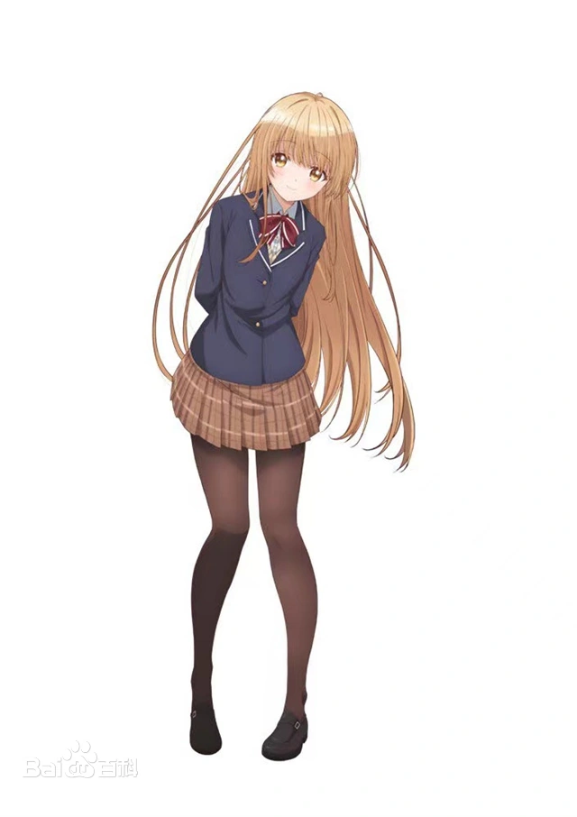

椎名真昼

中文名 椎名真昼 年龄 16
外文名 Shiina Mahiru 虚拟人物血型 AB型
配音 石见舞菜香 身高 156
性别 女 别名 天使大人
登场作品 关于我在无意间被隔壁的天使变成废柴这件事 生日 12月06日
椎名真昼（Shiina Mahiru、しいなまひる），轻小说《关于我在无意间被隔壁的天使变成废柴这件事》及其衍生作品中的女主角。由石见舞菜香配音。
椎名真昼，16岁，12月6日生。椎名真昼的父亲椎名朝阳和母亲椎名小夜两人因为家族利益而被迫结婚，一夜乱情而生下真昼，被父母丢给佣人小雪阿姨扶养。真昼从小就刻意将自己展示成温柔、乖巧、贤惠的“天使”样子，并在多个方面努力学习，但还是没能消除父母之间隔阂。从小没有得到父母足够的关爱，在与周和周的父母相识之后开始逐渐找回家的感觉。对周如姐姐照顾弟弟般的关爱。